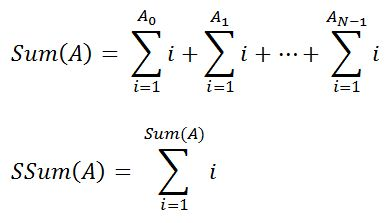

Phú hiện đang là một thành viên trong đội tuyển học sinh giỏi của trường và cậu ta đang được ôn tập để chuẩn bị cho kì thi học sinh giỏi sắp tới. Hôm nay là sinh nhật của mình nên Phú quyết định sẽ nghỉ xả hơi một ngày và mời Hằng - cô bạn gái của Phú cùng đi xem Fast and Furious 7 vừa được công chiếu. Tuy nhiên vì thời gian thi đã cận kề nên thầy giáo của Phú không muốn cậu ta nghỉ ngày nào, vì vậy ông ấy vẫn giao cho Phú một bài tập về nhà và yêu cầu cậu phải nộp bài vào ngày mai.
Bài toán được mô tả như sau: Cho mảng A gồm N phần tử A0, A1, ... AN-1 (0 ≤ Ai < 109+7). Tổng cấp 1 (Sum) và tổng cấp 2 (siêu tổng - SSum) của mảng A được tính theo công thức sau:

Tuy nhiên, để tăng độ khó của đề bài, thầy giáo của Phú quyết định giấu mảng A đi và chỉ cho Phú một mảng B gồm N+1 phần tử và một con số X. Mảng B có dang như sau: {X, (A0*X) % m, (A0*A1*X) % m, ... , (A0*A1*..AN-1) % m}. Trong đó m = 109+7 và % là phép chia lấy dư (mod).
Thầy giáo yêu cầu Phú phải tìm được giá trị siêu tổng của mảng A từ mảng B và giá trị X cho trước. Giá trị này có thể rất lớn nên chỉ cần xuất ra phần dư của nó khi chia cho 109+7. Vì đã lâu rồi Phú không được đi chơi với bạn của mình nên cậu ta muốn ở bên Hằng càng lâu càng tốt (và tất nhiên sẽ không có thời gian để làm bài tập mà thầy giáo giao) nên các bạn hãy giúp Phú giải quyết bài toán này nhé.
Dữ liệu nhập: Dòng đầu tiên chứa một số nguyên N - số lượng phần tử của mảng B (2 ≤ N ≤ 105). Dòng thứ hai chứa N số nguyên là giá trị các phần tử của mảng B (0 ≤ Bi < 109+7).
Dữ liệu xuất: Một con số duy nhất là giá trị siêu tổng của mảng A.
Mảng B gồm 4 phần tử: 3, 9, 36, 180
Ta có mảng A gồm 3 phần tử: {3, 4, 5}.
Sum(A) = 6 +10 + 15 = 31
SSum(A) = 496